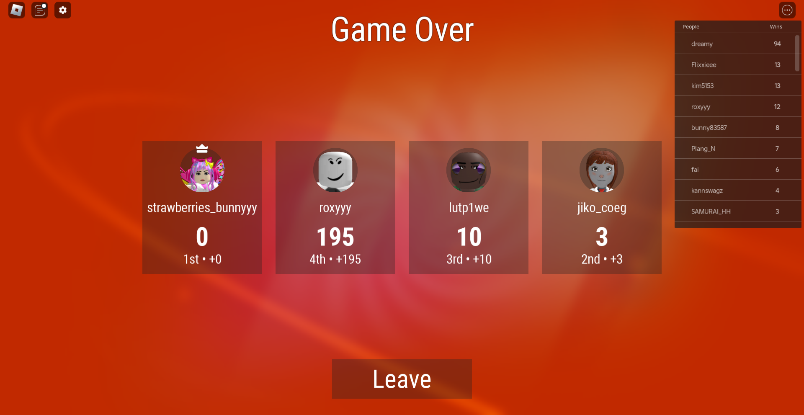
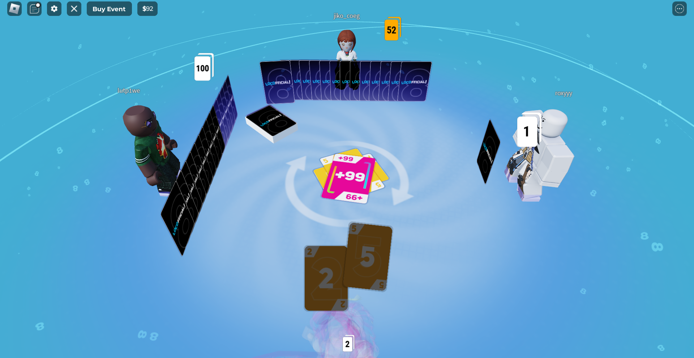

Desa pegunungan yang subur dan sejuk di kaki Gunung Rengganis, dengan enam dusun yang kaya potensi pertanian, budaya, dan keindahan alam yang masih terjaga.
Desa pegunungan dengan enam dusun dan alam yang masih terjaga keasriannya.
Gondosuli adalah desa yang terletak di Kecamatan Pakuniran, Kabupaten Probolinggo, Jawa Timur. Dikelilingi alam pegunungan yang sejuk di kaki Gunung Rengganis, desa ini menawarkan ketenangan, kesuburan lahan, dan keramahan masyarakat yang khas.
Wilayah seluas 11,66 km² ini bebas dari bencana banjir, dilewati jalur kecamatan Kotaanyar–Pakuniran, serta memiliki tiga aliran sungai yang menghidupi pertanian warganya sepanjang tahun.
Pakuniran
Probolinggo
Jawa Timur
67292
11,66 km²
6 Dusun
Sungai Pakes (Timur) · Sungai Cekor (Barat) · Sungai Ranon (Pusat)
Dari masa kemerdekaan hingga menjadi desa swasembada yang maju.
Berbagai elemen pendidikan mulai berdiri sejak zaman kemerdekaan, termasuk SD Negeri Gondosuli 1.
Sistem irigasi berkembang pesat mendukung pertanian padi di musim hujan dan tembakau di musim kemarau sebagai komoditas utama.
Gondosuli dikenal luas sebagai "Desa Durian". Buku Gondosuli Desa Durian (2013) oleh Ahmad Mursydi mencatat kekayaan buah lokal ini.
Modernitas tumbuh beriringan dengan tradisi. Pasar ikan Gondosuli direnovasi, fasilitas desa dilengkapi, pendidikan formal TK–SLTA tersedia penuh.
Klik kartu dusun untuk membuka profil lengkap beserta peta lokasi interaktif.
Terbagi 3 zona (Bawah, Tengah, Atas) dengan kopi, aren, padi, jagung, dan kayu sengon di tiap ketinggian berbeda.
Sentra tembakau ekspor hingga Rp 90.000/kg. Mayoritas warga lulusan S1, terdapat pesantren dengan ±70 santri.
Rumah pengrajin mebel, produsen minyak kelapa, dan pembuat rengginang serta kepeng (keripik singkong) khas desa.
Komunitas Madura yang kuat, pengrajin kayu, ladang kopi-tembakau. Terbagi Barat dan Timur oleh aliran sungai.
Dibelah Sungai Ranon di pusat desa. Jembatan Ranon menjadi salah satu ikon keindahan alam Gondosuli yang terkenal.
Pusat pemerintahan desa dengan kantor desa, klinik, dan fasilitas utama Gondosuli. Profil lengkap sedang disusun.
Alam yang subur, budaya yang kaya, dan masyarakat yang produktif menjadi modal utama kemajuan desa.
Gondosuli terkenal sebagai "Desa Durian" dengan produksi buah durian berkualitas tinggi. Tersedia di pasar tradisional setiap musim hujan bersama mangga dan pisang unggulan.
Komoditas UnggulanLadang padi optimal di musim hujan, berganti tembakau ekspor di musim kemarau. Tiga sungai mendukung irigasi sepanjang tahun.
PertanianPengrajin mebel di Karangduwek dan pengrajin kayu di Durin menghasilkan produk bernilai tinggi yang dikirim ke pabrik dan pasar.
Industri LokalPusat perdagangan ikan dan buah durian yang telah direnovasi, menjadi jantung perekonomian masyarakat Gondosuli.
Ekonomi LokalFasilitas olahraga kebanggaan desa yang juga menjadi ruang publik untuk kegiatan sosial dan hiburan masyarakat.
Fasilitas UmumRujak Gondosuli dengan sayuran segar, bumbu kacang, tahu kukus, dan kerupuk udang — kuliner legendaris yang tak ditemukan di tempat lain.
Kuliner TradisionalTempat-tempat indah yang masih asri untuk dikunjungi dan dinikmati bersama keluarga.
Hamparan alam pegunungan yang membentang megah sebagai latar belakang desa yang memukau.
Objek wisata alam unik di Dusun Kletek bagian hulu, masih alami dan jarang dijangkau wisatawan umum.
Jembatan indah bernuansa perbukitan hijau yang sejuk dengan pemandangan alam desa yang masih asri.
Pengalaman belanja di pasar tradisional yang menjual ikan segar dan durian pilihan Gondosuli setiap musim.
Gondosuli berada di posisi strategis, dilewati jalur kecamatan Kotaanyar–Pakuniran.
7°54′S 113°36′E · Ketinggian ±400 mdpl
Angkutan Pakuniran–Kotaanyar · Ojek Motor
Sekilas potret alam, kehidupan, dan budaya desa yang memikat.


Temukan kami di Kecamatan Pakuniran atau hubungi langsung melalui saluran di bawah ini.
Desa Gondosuli, Kecamatan Pakuniran,
Kabupaten Probolinggo, Jawa Timur 67292
Rumah pak Kepala Desa Gondosuli kali gatau
Pusat Administrasi Pemerintahan Desa
+62 isi sendiri lemao
Tersedia pada jam pelayanan
Senin–Jumat: 08.00 – 15.00 WIB
Sabtu: 08.00 – 12.00 WIB
@desagondosuli
Instagram · Facebook
desa.gondosuli@gmail.com